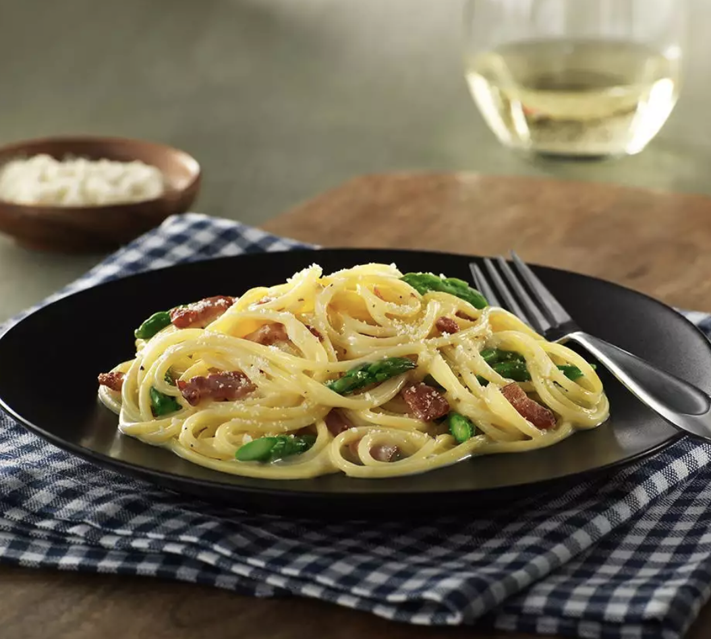

Gluten Free Carbonara

Description
This gluten-free carbonara is a take on a classic Italian pasta dish and serves as an easy, delicious gluten-free dinner!
Ingredients
- (12 ounce) box Barilla® Gluten Free Spaghetti
- ½ cup chopped onion
- 1 cup chopped raw bacon
- 1 tablespoon vegetable oil
- 1 bunch asparagus, trimmed, cut 1 inch long on a bias
- 5 large egg yolks, lightly beaten
- ½ cup grated Parmesan cheese
- salt and ground black pepper to taste
Steps
- Bring a large pot of water to a boil. Cook pasta according to package directions. Drain and set aside.
- Meanwhile, sauté onion, bacon, and oil in a skillet over medium-high heat until bacon is rendered and onions are translucent, about 5 minutes. Add asparagus; sauté for 3 to 4 minutes, then season with salt and pepper.
- Mix yolks with cheese in a bowl. Season with salt and pepper; set aside.
- Toss pasta with bacon and asparagus mixture in the skillet until warmed through. Remove the skillet from heat.
- Fold yolk mixture into pasta; stir vigorously until yolks thicken and coat spaghetti. Serve immediately.
Back Home